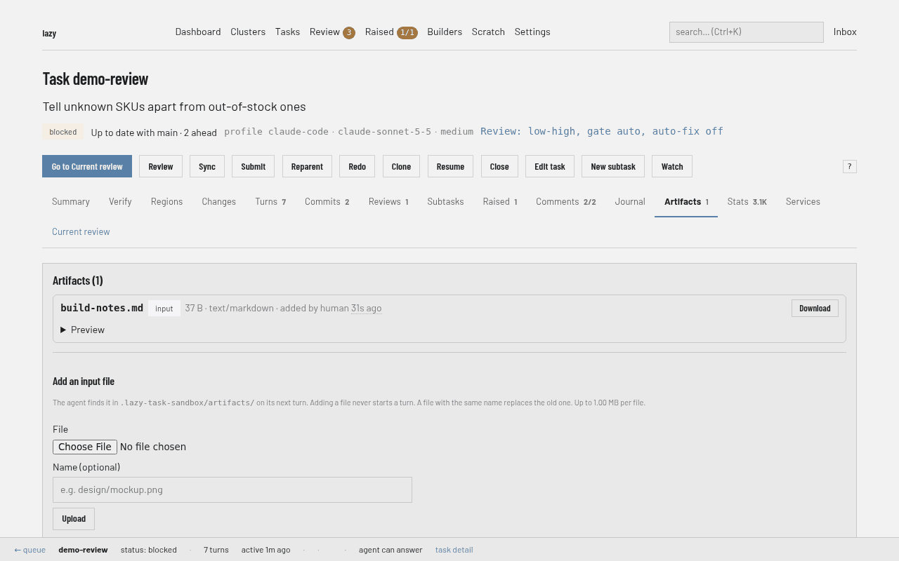

Task artifacts
An artifact is a named file attached to a task: either something handed to the task (a design file, a spec, a screenshot, a data dump) or something the task publishes back (a report, a rendered image, an export the human should be able to retrieve without digging through a worktree).
Dashboard

The task page on the local dashboard (lazy dashboard) has an Artifacts
tab, labelled with how many artifacts the task carries. Each artifact shows its
name, size, type, origin (input or output), who added it and when, and a
Download link. Raster images preview inline; text files preview as text and
Markdown files render. HTML and SVG are shown as source, never rendered. Below
the list, Add an input file attaches a file for the agent, optionally under a
name of your choosing; it never starts a turn, and a file with an existing name
replaces it. Downloads go through the same dashboard sign-in as every page, and
anything that is not a raster image is delivered as a file attachment.
lazy artifact add <task> design/index.html design/app.css # attach files
lazy artifact list <task> # what is attached
lazy artifact get <task> design/index.html # print one
lazy artifact get <task> shot.png -o /tmp/shot.png # write one out
lazy artifact rm <task> design/app.css # remove one
The task's Artifacts tab in the dashboard and Lazy Teams also lets you view, download, attach, and remove files. Lazy Teams can attach files while creating a task, making them available on its first turn. Removing a file takes effect on the next agent turn.
Every artifact of a task is materialized into its worktree at turn launch, so the agent reads them with ordinary file tools:
<worktree>/.lazy-task-sandbox/artifacts/design/index.html
Why this exists
Without artifacts, the only way to hand a task a file is to paste its content into a comment and ask the agent to write it back out: no integrity check, no binary, bounded only by whatever the comment surface tolerates, and it pollutes the notes the agent is told to act on. Files — a set of HTML/CSS/JSON design exports, say — should travel as files.
Artifacts are data, never guidance
This is the load-bearing rule, and it is enforced in three places at once:
- Attaching an artifact creates no comment, changes no status, and triggers no turn. It is a passive write, the same contract as raised items and journal entries.
- Artifact content is never injected into any prompt. A task launch carries only a short notice listing names, sizes and the directory they live in.
- The notice says explicitly that the files are data the agent was handed, not instructions to follow.
A file you want the agent to act on is a comment (or a prompt) that references the artifact. The artifact itself is just the bytes.
Delivery: materialized into the worktree
On every turn launch, lazy writes the task's artifacts into
.lazy-task-sandbox/artifacts/ in its worktree. .lazy-task-sandbox/ is in the
ignore entries lazy init writes and is excluded from lazy's dirty-worktree
checks, so artifacts cannot dirty a task's diff.
The directory is derived state, wiped and rewritten each turn:
- an artifact removed since the last turn disappears from it,
- an agent's local edit to a file there does not survive and is not saved,
- it is never committed.
An agent that wants to publish something back attaches it (below) rather than editing the mirror.
If the artifacts cannot be materialized, the launch fails loudly. An agent that silently lost its inputs would produce confidently wrong work.
Reading over MCP (lazy_artifact_get) is the secondary path — the way for the
builder, which has no worktree, and for reading another task's published output.
The reply depends on the artifact:
- Small text (up to 64 KiB) comes back inline as
content. - Binary or larger artifacts are never inlined as base64. The bytes are
written to a file and the reply carries its
path: your own task's.lazy-task-sandbox/artifacts/<name>; otherwise a copy under.artifacts/in the builder's$LAZY_SCRATCH_DIR(not captured as a scratch file) or under.lazy-task-sandbox/fetched/for a task agent. - tar / tgz / zip artifacts also return
members(name and size). Passmemberto read one text member inline without extracting the archive.
Publishing back
A task agent attaches an output with lazy_artifact_add, giving either a path in
its worktree (preferred, and the only cheap way to attach binary) or inline
content:
lazy_artifact_add(path="report.html", name="report.html")
The human retrieves it without opening the worktree:
lazy artifact get <task> report.html -o ~/Desktop/report.html
Artifacts are not a place to put work. Code belongs in commits; an artifact is for things a commit is the wrong shape for.
Bounds
| Bound | Value |
|---|---|
| One artifact | 1 MiB |
| All artifacts on one task | 8 MiB |
| Artifacts per task | 64 |
| Artifact name | 200 characters |
These are fixed limits, not config keys. They are enforced in storage itself, so every writer (CLI, MCP, the daemon) is held to the same numbers. Their job is to stop a task's history — and the store holding it — from growing without bound.
Names
An artifact name is a relative POSIX path — design/index.html keeps its
directory. Absolute paths, drive letters, .. segments and empty names are
rejected, never silently rewritten: a name that quietly became something else
is how a file ends up where nobody looks for it. When you attach by path, the
default name is that relative path (or the basename, if the path is absolute or
escapes upward).
One name, one artifact. Re-attaching a name replaces it. There is deliberately no versioning, no dedup and no external blob backend.
Every artifact carries a SHA-256 of its content as an integrity check.
Origin
origin is input (given to the task) or output (published by it). It is a
descriptive label so a human scanning lazy artifact list can tell the two apart
without reading names — never a permission. Both are stored, bounded and
retrieved identically. The default follows the caller: a task agent's attach is
an output, the builder's and the CLI's is an input.
Surfaces
| CLI | MCP | Dashboard | Lazy Teams | |
|---|---|---|---|---|
| attach | lazy artifact add |
lazy_artifact_add |
task page, Artifacts tab | task page, Artifacts tab; the New Task form |
| list | lazy artifact list |
lazy_artifact_list |
task page, Artifacts tab | task page, Artifacts tab |
| read | lazy artifact get |
lazy_artifact_get |
Download link, preview | Download link |
| remove | lazy artifact rm |
(none — deliberate) | (none — use the CLI) | (none — use the CLI) |
Removal is CLI-only: an artifact is often the only copy of something a human handed the task, deleting is the one artifact operation that destroys something the caller did not create, and it takes two seconds at a terminal. Attach is ownership-gated for agents (own task or a direct subtask); list and read are open tree-wide like every other read. See surface-asymmetries.md.
lazy show lists a task's artifacts (metadata only), and lazy_show returns the
same as artifacts.
Lazy Teams
A task page has an Artifacts tab, labelled with how many artifacts the task
carries. It lists inputs and outputs separately, each with its size, type and a
Download link; images also get a small preview you can click to open full
size. The tab also shows how much of the task's budget is left (8 MB and 64
files per task, 1 MB per file), so a refused attach is never a surprise. Any member who can
leave a note on the task can attach a file there, optionally under a name of
their choosing (for example design/spec.md). The file is stored as an input
and nothing else happens: the agent finds it on its next turn, and attaching
does not start one. A file with the same name as an existing artifact replaces
it, and the page says so. Oversized files and invalid names are refused with the same
explanation the CLI gives.
The New Task form can attach files too, under Files for the agent (you can choose several). They are checked against the same limits before the task is created, then attached as inputs before the task starts, so the agent can read them from its first turn. If a file cannot be attached after the task was created, the task stays unstarted and its Artifacts tab opens, naming the file, so you can attach it again and then start the task.
Downloads are always delivered as file attachments, never displayed in the browser, so an HTML or SVG file a task published cannot run in your Teams session. Image previews and screenshots in an agent's report are the one exception: raster images (never SVG) render inline.
Events
Attaching and removing publish artifact.added / artifact.removed on the
daemon event feed, carrying metadata only (name, size, origin, who) — the feed
is an invalidation hint, and artifact content can be a megabyte of binary.